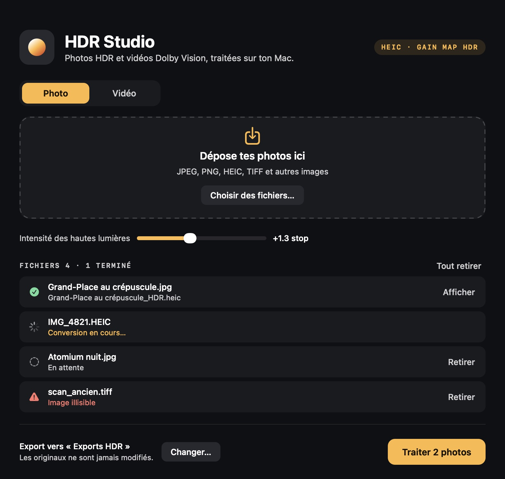
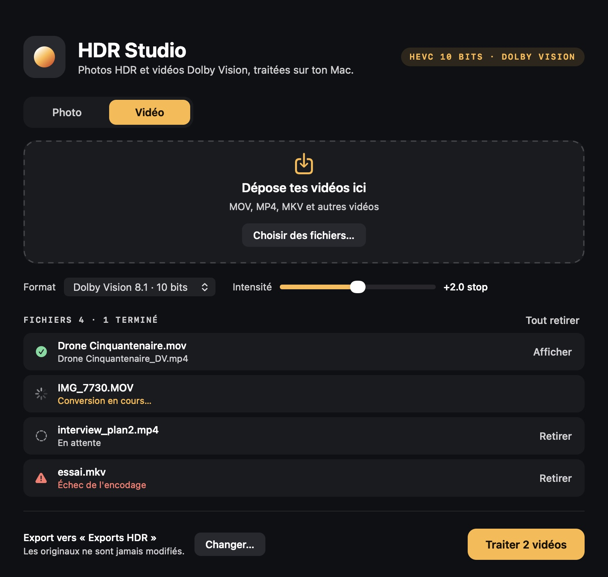

Glisse tes fichiers, choisis un dossier, clique sur Traiter. HDR Studio rehausse les hautes lumières de tes photos et convertit tes vidéos en HEVC 10 bits Dolby Vision, sans rien envoyer en ligne.
git clone -b claude https://github.com/renaud-bxl/hdr-studio.git cd hdr-studio && ./install.sh
Le script installe au besoin ffmpeg, dovi_tool et gpac avec Homebrew, compile l'application et l'installe dans le dossier Applications. Il faut Homebrew et les outils Xcode (xcode-select --install).


Deux onglets, un même geste. Les originaux ne sont jamais modifiés, les exports portent un suffixe et ne s'écrasent pas entre eux.
Chaque image est exportée en HEIC avec gain map HDR, le format des photos HDR d'Apple.
Chaque vidéo est exportée en HEVC 10 bits, BT.2020, PQ, avec ou sans métadonnées Dolby Vision.
Le traitement se fait en lot, fichier par fichier, avec l'état de chacun dans la liste.
Ce que contient exactement chaque fichier exporté.
| Export | Fichier | Contenu |
|---|---|---|
| Photo HDR | nom_HDR.heic | Image de base Display P3 et gain map ISO 21496-1. |
| Dolby Vision | nom_DV.mp4 | HEVC Main 10, BT.2020 PQ, métadonnées HDR10, RPU Dolby Vision profil 8.1. |
| HDR10 | nom_HDR10.mp4 | HEVC Main 10, BT.2020 PQ, métadonnées HDR10. |
Facultatif : en ligne de commande, en remplaçant les chemins par ceux de tes fichiers.
APP="/Applications/HDR Studio Claude.app/Contents/MacOS/HDRStudio" "$APP" --convert-photo ~/Desktop/ma_photo.jpg ~/Desktop/ma_photo_HDR.heic 1.3 "$APP" --convert-video ~/Desktop/ma_video.mov ~/Desktop/ma_video_DV.mp4 dv 2.0
Ce que l'application ne fait pas, dit clairement.